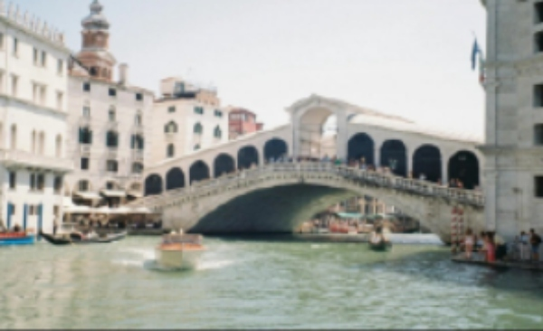

Image 1: Reference Image

Image 2: Illustrated Environment on Illustrator

For my illustrated environment, I chose a picture of the iconic Venice bridge with boats under it and buildings overlapping and underlapping the bridge. The mood I hoped to achieve with my triadic color scheme was something more loud and surreal than the original tone of the picture, which is primarily somber in color and mood. To simplify the environment, I chose to leave out things like the people, lines and patterns on the buildings, the fence on the bridge, and other details that make the original picture look more occupied and lively. Because I wanted the tone of my environment to be surreal, I also felt like it should be empty, creating a more unsettling atmosphere.
Back to Home